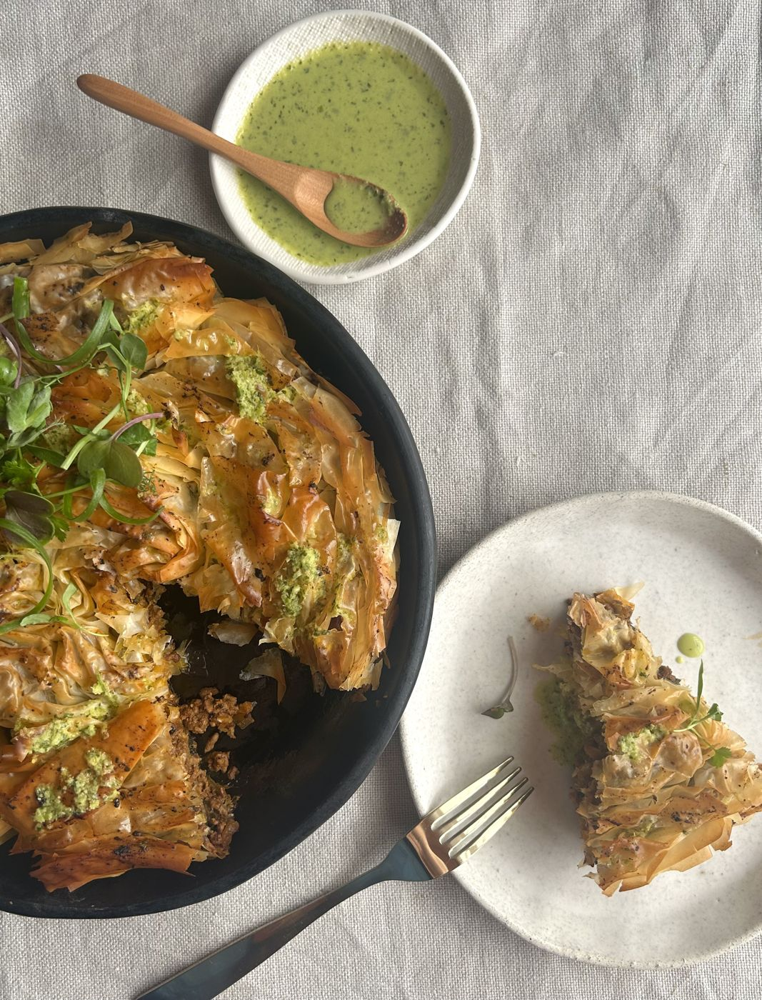
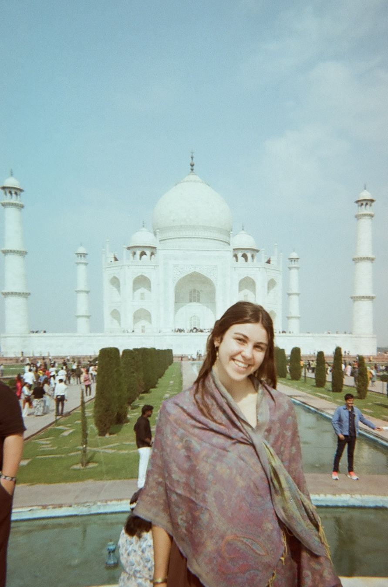
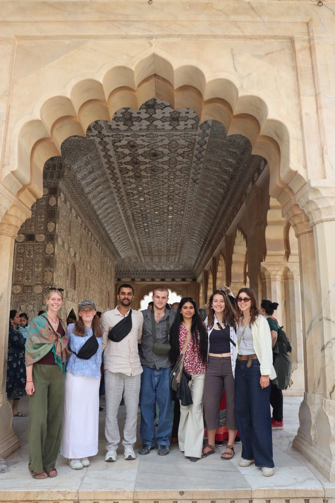
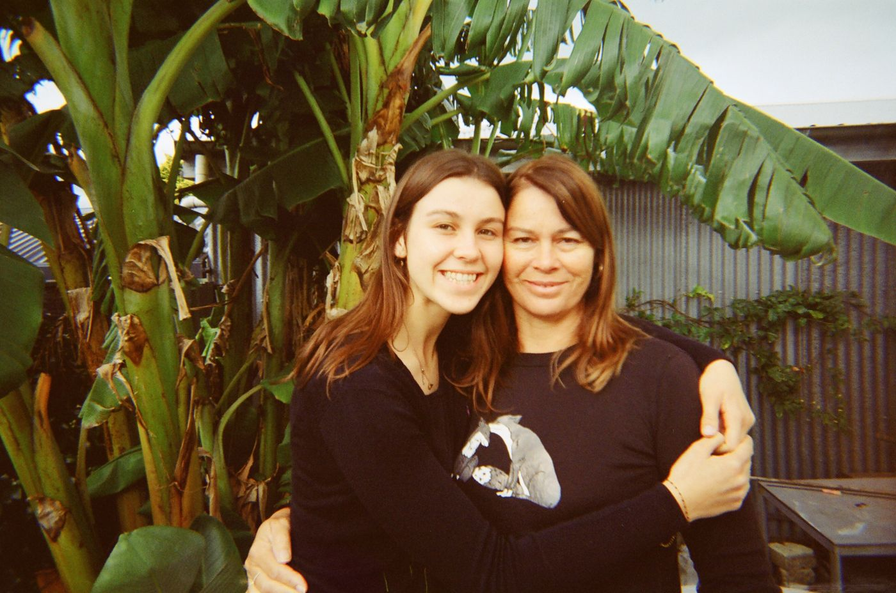
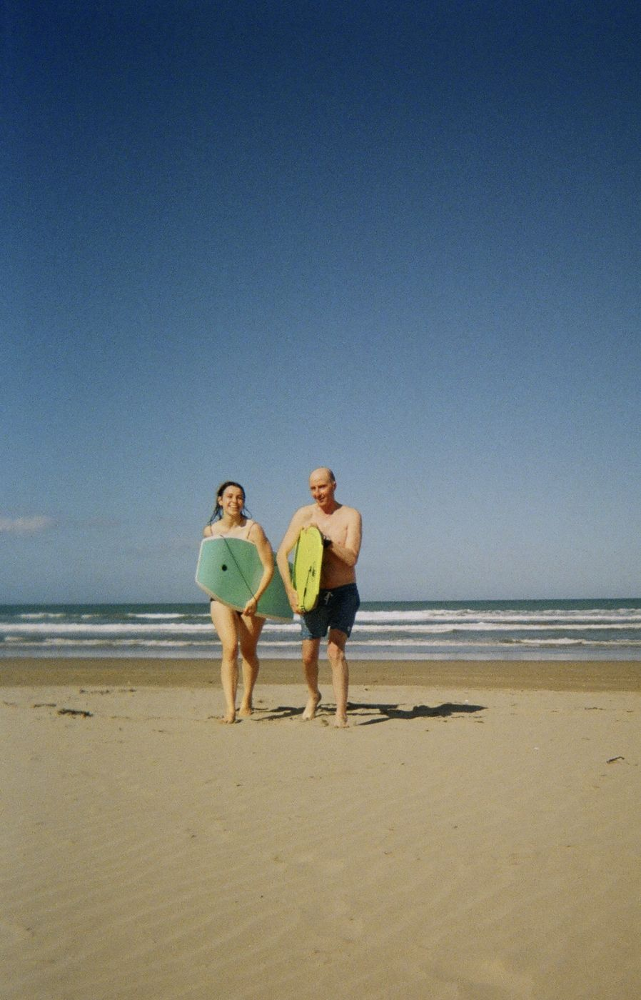

Experiences
Fig n' Fennel believe there are many experiences we have been lucky to have that guide us...
Here's a few that have shaped Esta
Esta was grateful to be one of two NZ Food Communicators Scholarship recipients. This program has been full of mentorship sessions with NZ's top food writers, educators, influencers and businesses. She's created two recipes for NZ Beef and Lamb and written a story for the Outstanding Food Producers awards. This opportunity has allowed her to see how her passion for food translates into a career.
Esta started 2016 with a life changing 6 weeks in India on the Prime Minister's Scholarship for Asia study tour. The tour focussed on sustainable development, culture and bridging cross cultural connections as an ambassador for Aotearoa. The trip brought many once in a lifetime experiences but her biggest takeaway was the privilege she has to live in Aotearoa. This motivates her to protect our corner of the world and continue to learn from diverse communities.
As the daughter of a journalist and home renovator Esta has lived in a home of constant ideation. This has instilled a curiosity and love for the process of problem solving. She believes that often the answer lies in what's closest to you. She is grateful for her parents for a home that encouraged her to create curiously.





